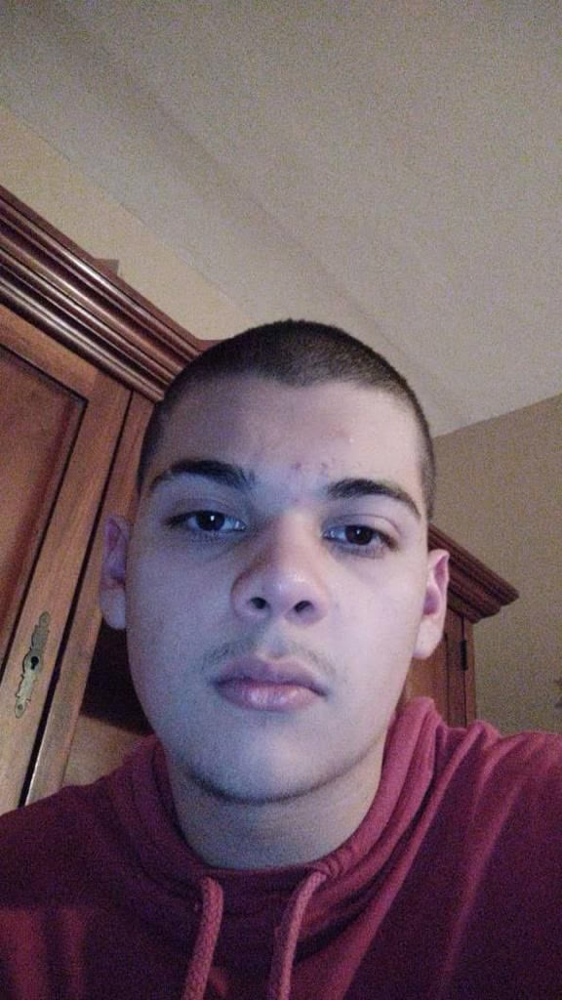
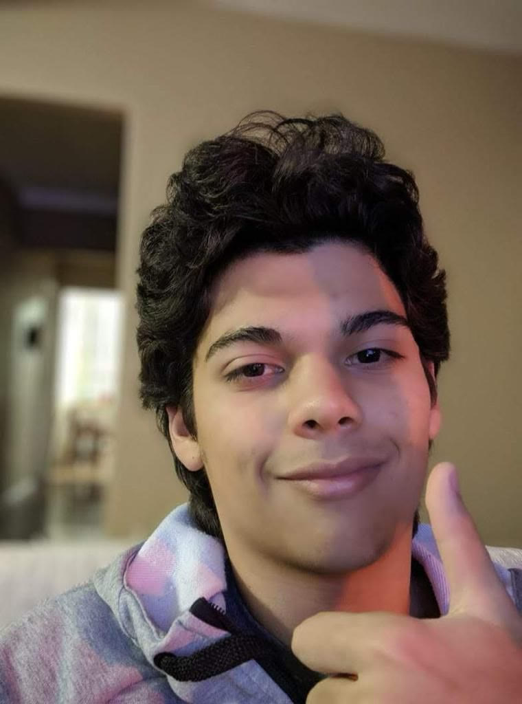
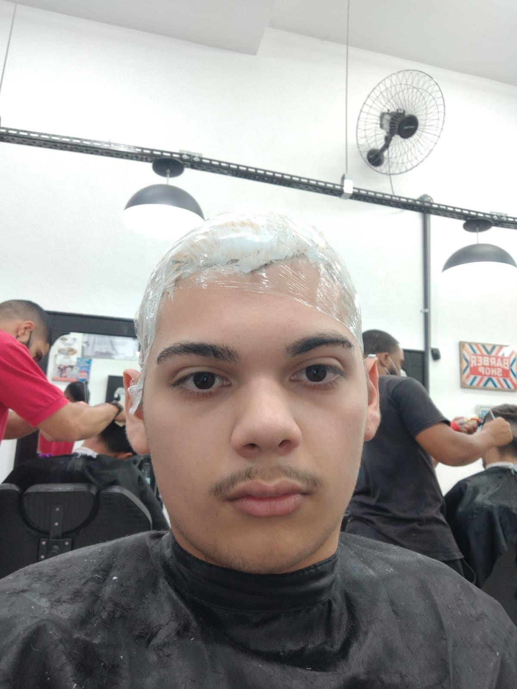
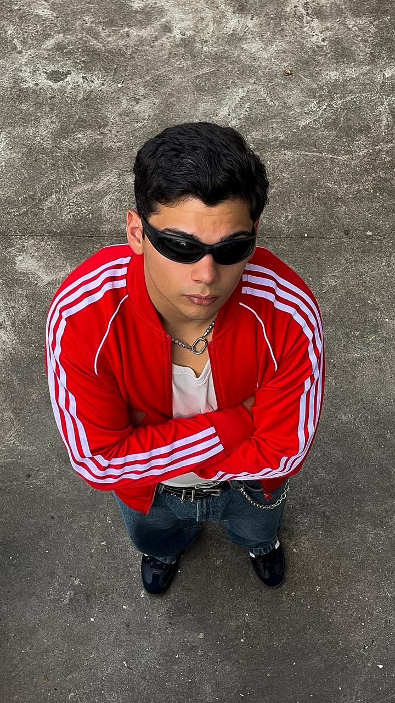
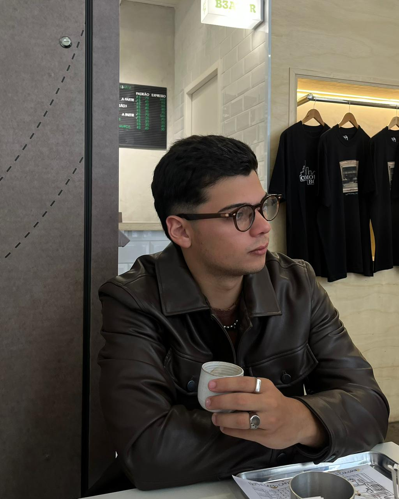
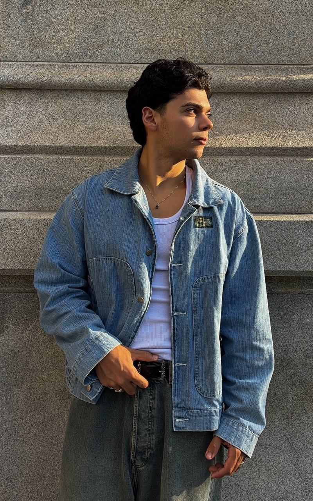
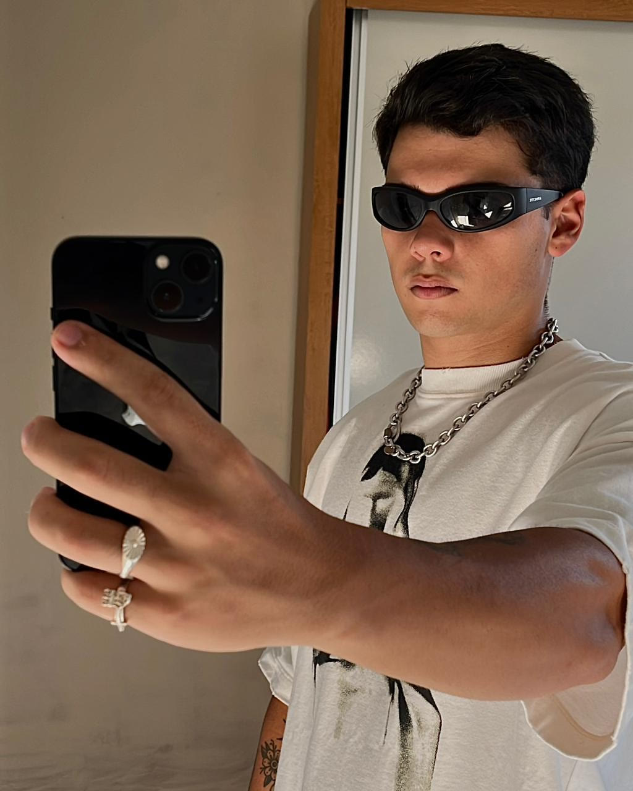
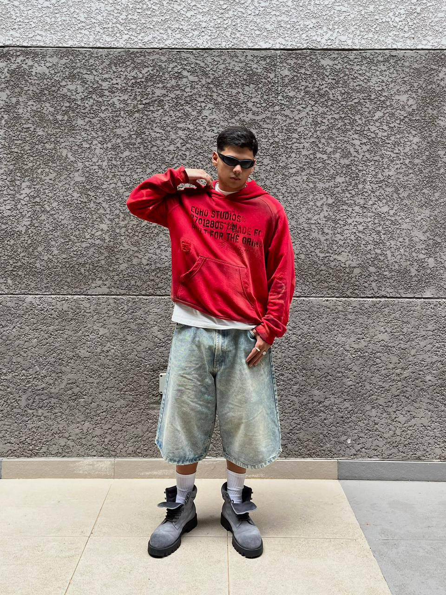
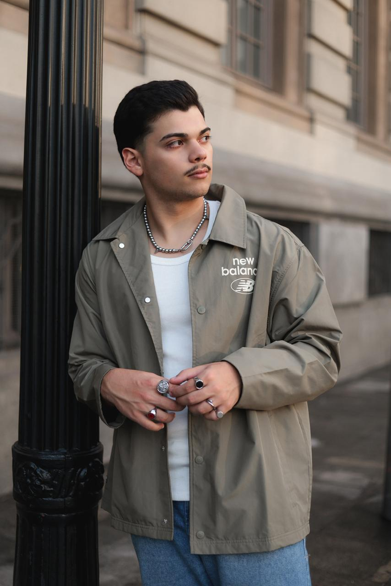
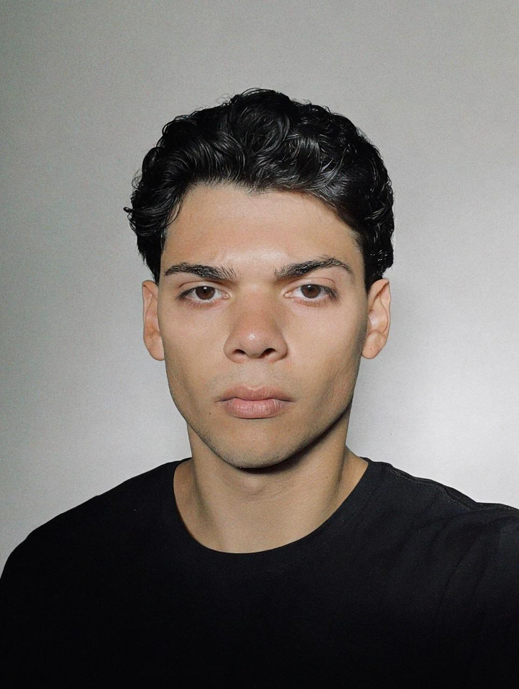

Cortes no improviso e uma imagem que não mostrava quem ele queria ser.



ANTES E DEPOIS REAL
Cortes no improviso e uma imagem que não mostrava quem ele queria ser.



Cabelo com intenção, escolhas melhores e uma presença mais alinhada.


O PROBLEMA NÃO É O QUE VOCÊ PENSA
Seu cabelo, pele, postura e fotos mandam sinais antes de você perceber. O manual mostra o que corrigir primeiro, sem rotina infinita e sem gastar com coisa inútil.
A DIFERENÇA ESTÁ NOS DETALHES
O manual mostra o que ajustar primeiro para sua imagem ficar mais limpa no espelho e na câmera.

O QUE O MANUAL COBRE
O foco é tirar o visual largado e deixar sua imagem mais limpa, natural e bem pensada.




◆ QUEM VAI TE ENSINAR
A abordagem é simples: identificar o erro, corrigir o detalhe e repetir o básico bem feito. Sem personagem, sem exagero e sem promessa vazia.
PARA QUEM É
O QUE VOCÊ RECEBE
ACESSO COMPLETO
Aulas curtas e aplicáveis para corrigir cabelo, pele, postura, físico e presença sem transformar isso em uma rotina complicada.
Um curso bônus completo sobre luz, ângulo, expressão e enquadramento para sair melhor em qualquer foto.
A VERDADE INCOMODA
Você pode se sentir mais arrumado, mais presente e mais você. Mas se cabelo, pele, postura e foto não acompanham essa imagem, o mundo lê uma versão menor do que está na sua cabeça.
DEMONSTRAÇÃO
De R$197
Por apenas
Pagamento único. Sem mensalidade. Acesso imediato após a confirmação.
FAQ
Não. O cabelo é o ponto de entrada porque costuma ser o erro mais visível. Mas o manual também tem módulos de pele, alimentação, postura, físico, encerramento e o conteúdo bônus Manual da Foto Perfeita.
Não. A proposta é corrigir hábitos e montar uma rotina possível, com produtos simples e fáceis de encontrar.
Sim. A ideia é entender seu tipo de fio e adaptar rotina, produto e finalização para ele.
Sim. O manual começa do básico e evita linguagem complicada. Ele foi feito para dar direção prática.
O acesso é digital. Depois da confirmação do pagamento, você recebe as instruções para entrar no conteúdo.
Tem. Você tem 7 dias para acessar e avaliar. Se não fizer sentido para você, solicite o reembolso dentro do prazo.
Sim. A linguagem foi pensada para homens jovens que querem melhorar a aparência sem exagero e sem gastar alto.
Se você teve que pensar muito para responder, esse é o sinal. Não é sobre vaidade. É sobre parar de parecer menos do que você é.
QUERO O MANUAL AGORA